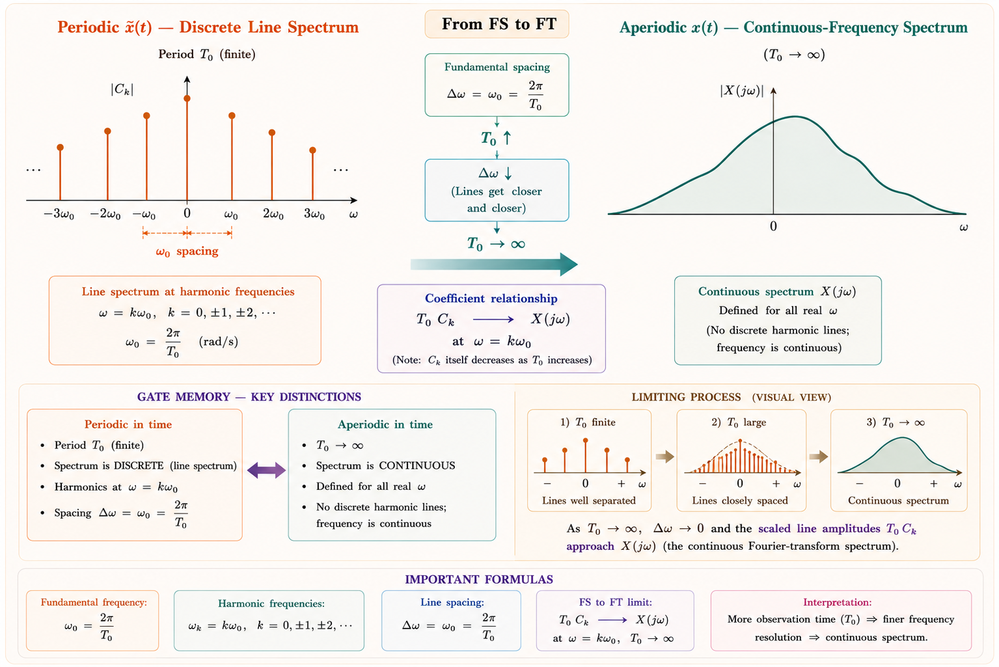
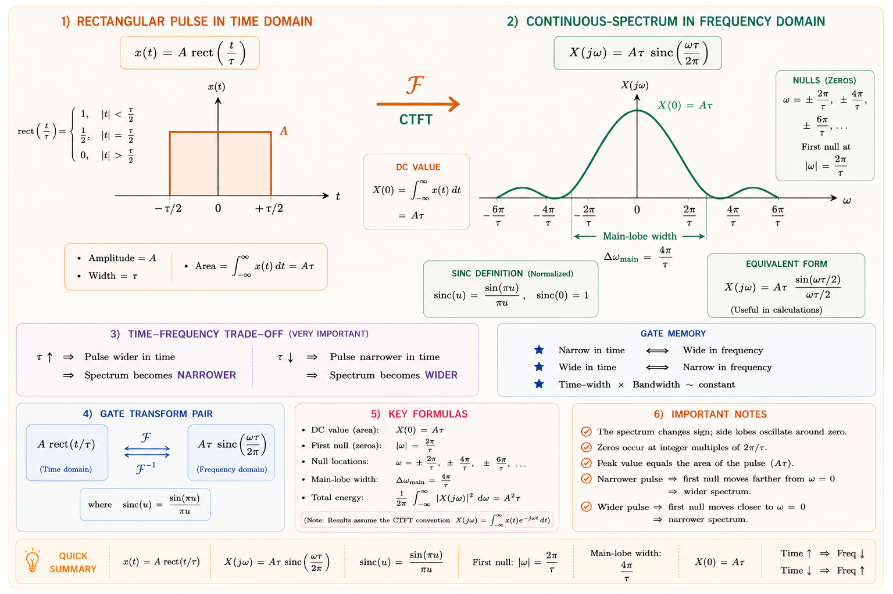
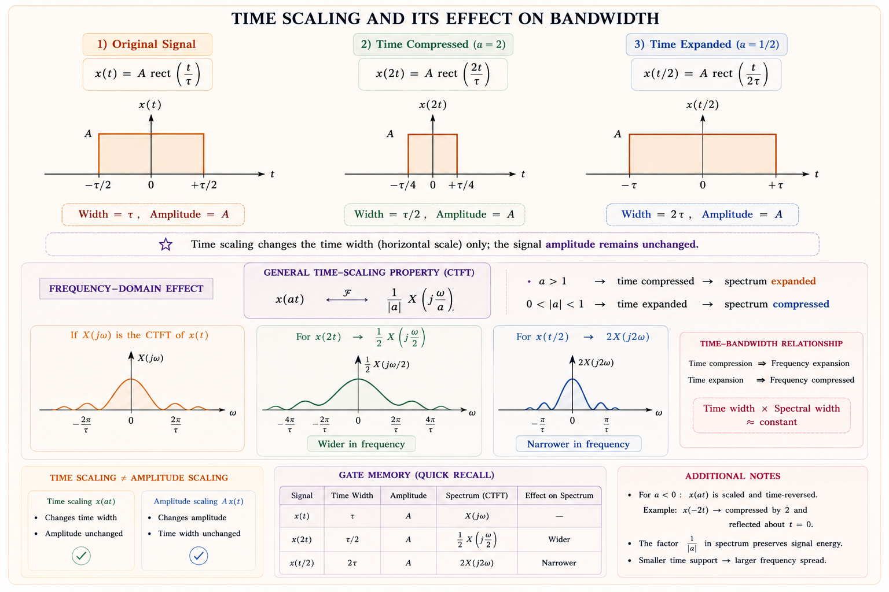
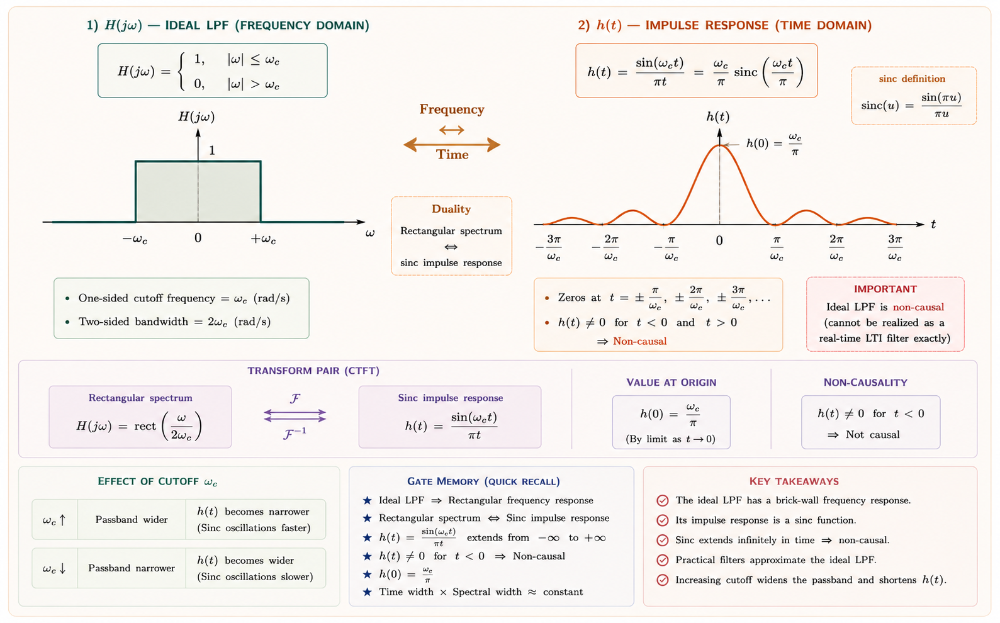
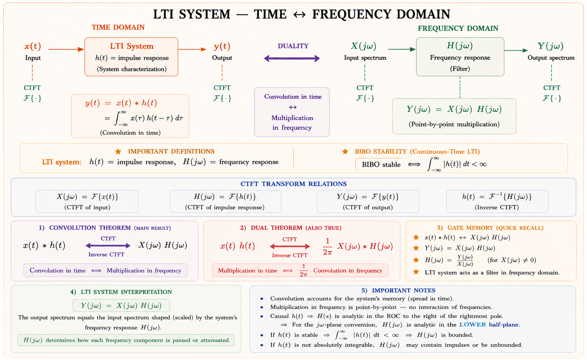
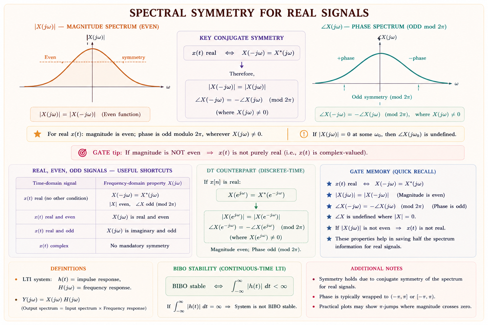

From time-domain waveforms to frequency-domain spectra — the CTFT is the mathematical backbone of signal analysis, filter design, communication systems, and every spectrum analyser on the planet. Master this and you command the language of all signals.
Every engineer has asked: "What frequencies are hiding inside this signal?" When you plug a guitar into a tuner, the tuner does not measure time — it measures which frequency is loudest. When a spectrum analyser shows you channels on a radio band, it is displaying the result of a Fourier Transform. The Continuous-Time Fourier Transform (CTFT) is the mathematical operation that converts a time-domain signal \(x(t)\) into its frequency-domain representation \(X(j\omega)\), revealing every sinusoidal component present.[1]
Any physically realisable, energy-finite signal can be thought of as an infinite superposition of sinusoids of different frequencies, amplitudes, and phases. The CTFT tells you exactly how much of each frequency is present — both its amplitude and its phase angle.
Consider an AM radio signal carrying voice: in time domain it looks like a noisy, irregular wave — impossible to decode visually. In frequency domain it separates neatly into a carrier frequency and sidebands. The receiver's filter can then surgically extract only the desired channel. This is impossible without the Fourier Transform. Similarly, in power systems, harmonic analysers apply CTFT to detect 3rd, 5th, 7th harmonics injected by nonlinear loads — essential for power quality management.
The cleanest way to understand the CTFT is to derive it by taking a periodic signal and letting the period \(T_0 \to \infty\). This is not just a mathematical trick — it is exactly what happens physically when you take an isolated pulse and imagine copies of it spaced infinitely far apart.[2]
For a periodic signal \(\tilde{x}(t)\) with period \(T_0\) and fundamental frequency \(\omega_0 = 2\pi/T_0\), the complex exponential Fourier series is:
Now imagine we stretch the period: \(T_0 \to \infty\). The copies of the pulse move infinitely far away. The signal becomes an isolated aperiodic pulse \(x(t)\). What happens to the spectrum?
As \(T_0 \to \infty\):

Multiplying both sides of the Fourier series equation by \(T_0\) and taking the limit gives us the CTFT pair. Define \(X(j\omega) \triangleq \lim_{T_0\to\infty} T_0 \cdot c_k\). Then:
The Fourier Transform coefficient \(X(j\omega)\) is the density of the sinusoidal content per unit frequency bandwidth. The Fourier Series coefficient \(c_k\) was the amplitude at a single discrete frequency. When frequencies become continuous, we must speak of "amplitude per Hz" — hence the density interpretation.
The Continuous-Time Fourier Transform is defined as a pair of equations — one that analyses (breaks a signal into frequencies) and one that synthesises (reconstructs the signal from frequencies).[1]
The notation \(x(t) \xleftrightarrow{\mathcal{F}} X(j\omega)\) denotes a Fourier Transform pair. Some textbooks use \(f\) (Hz) instead of \(\omega\) (rad/s): \(X(f) = \int_{-\infty}^{\infty} x(t) e^{-j2\pi ft} dt\). In GATE EE, the \(\omega\) convention is most common — always confirm which convention a problem uses before solving.[3]
| Symbol | Name | Units | Physical Meaning |
|---|---|---|---|
| \(x(t)\) | Time-domain signal | Volts, Amperes, etc. | The signal you can measure with an oscilloscope |
| \(X(j\omega)\) | Frequency spectrum | V·s, A·s, etc. | Complex amplitude density at each frequency \(\omega\) |
| \(\omega\) | Angular frequency | rad/s | \(\omega = 2\pi f\) where \(f\) is frequency in Hz |
| \(|X(j\omega)|\) | Magnitude spectrum | — | Amplitude of each frequency component |
| \(\angle X(j\omega)\) | Phase spectrum | radians | Phase shift of each frequency component |
| \(e^{-j\omega t}\) | Analysis kernel | — | Complex sinusoid used to "probe" signal at frequency \(\omega\) |
The CTFT exists (converges) if a signal satisfies the Dirichlet conditions:[2]
A unit step \(u(t)\) and \(\cos(\omega_0 t)\) are not absolutely integrable — their CTFT contains Dirac delta functions \(\delta(\omega)\). Their transforms exist in the generalised function sense but require special treatment. GATE frequently tests this distinction.
These are the backbone pairs that GATE and IES test repeatedly. Derive each one at least once from the definition to build intuition — then memorise them for exam speed.[1,2]

Let \(x(t) = A\) for \(|t| \leq \tau/2\) and zero elsewhere. Applying the definition:
GATE uses two conventions: unnormalised: \(\mathrm{sinc}(\theta) = \dfrac{\sin\theta}{\theta}\) — nulls at \(\omega = \pm 2\pi k/\tau\). Normalised: \(\mathrm{sinc}(x) = \dfrac{\sin(\pi x)}{\pi x}\) — nulls at integer \(x\). Oppenheim uses unnormalised; Haykin uses normalised. Always read the problem definition.
| # | Signal \(x(t)\) | Transform \(X(j\omega)\) | Exam Weightage |
|---|---|---|---|
| 1 | \(\delta(t)\) — Dirac impulse | \(1\) (flat spectrum) | 🟢 Very High |
| 2 | \(1\) — DC signal | \(2\pi\delta(\omega)\) | 🟢 High |
| 3 | \(e^{-at}u(t),\; a>0\) — one-sided decaying exp. | \(\dfrac{1}{a+j\omega}\) | 🟢 Very High |
| 4 | \(e^{-a|t|},\; a>0\) — two-sided decaying exp. | \(\dfrac{2a}{a^2+\omega^2}\) | 🟡 Medium |
| 5 | \(u(t)\) — unit step | \(\pi\delta(\omega) + \dfrac{1}{j\omega}\) | 🟢 High |
| 6 | \(\mathrm{rect}(t/\tau)\) — rectangular pulse | \(\tau\,\mathrm{sinc}(\omega\tau/2\pi)\) | 🟢 High |
| 7 | \(\mathrm{sinc}(Wt/\pi)\) — sinc function | \(\dfrac{\pi}{W}\mathrm{rect}\!\left(\dfrac{\omega}{2W}\right)\) — ideal LPF | 🟢 High (Duality) |
| 8 | \(e^{j\omega_0 t}\) — complex exponential | \(2\pi\delta(\omega - \omega_0)\) | 🟢 Very High |
| 9 | \(\cos(\omega_0 t)\) | \(\pi[\delta(\omega-\omega_0)+\delta(\omega+\omega_0)]\) | 🟢 Very High |
| 10 | \(\sin(\omega_0 t)\) | \(\dfrac{\pi}{j}[\delta(\omega-\omega_0)-\delta(\omega+\omega_0)]\) | 🟡 Medium |
| 11 | \(te^{-at}u(t),\; a>0\) | \(\dfrac{1}{(a+j\omega)^2}\) | 🟡 Medium |
| 12 | \(\sum_{n=-\infty}^{\infty}\delta(t-nT_s)\) — impulse train | \(\dfrac{2\pi}{T_s}\sum_{k=-\infty}^{\infty}\delta(\omega - k\omega_s)\) | 🟡 Sampling Thm |
This is the single most tested transform pair in GATE EE. Derivation from first principles:
The magnitude and phase spectra are: \(|X(j\omega)| = \dfrac{1}{\sqrt{a^2+\omega^2}}\) and \(\angle X(j\omega) = -\arctan\!\left(\dfrac{\omega}{a}\right)\). This is the Lorentzian spectrum — also the frequency response of an RC low-pass filter with \(a = 1/RC\).
Properties let you compute Fourier Transforms of complex signals without evaluating integrals from scratch. This is where GATE saves you time — learn to chain properties together.[1,2]
| Property | Time Domain | Frequency Domain | GATE Weight |
|---|---|---|---|
| Linearity | \(ax(t)+by(t)\) | \(aX(j\omega)+bY(j\omega)\) | 🟢 Very High |
| Time Shifting | \(x(t-t_0)\) | \(e^{-j\omega t_0} X(j\omega)\) | 🟢 Very High |
| Frequency Shifting (Modulation) | \(e^{j\omega_0 t} x(t)\) | \(X(j(\omega-\omega_0))\) | 🟢 Very High |
| Time Scaling | \(x(at)\) | \(\frac{1}{|a|}X\!\left(\frac{j\omega}{a}\right)\) | 🟢 High |
| Time Reversal | \(x(-t)\) | \(X(-j\omega) = X^*(j\omega)\) | 🟡 Medium |
| Differentiation in Time | \(\frac{d^n x}{dt^n}\) | \((j\omega)^n X(j\omega)\) | 🟢 High |
| Integration in Time | \(\int_{-\infty}^{t} x(\tau)d\tau\) | \(\frac{1}{j\omega}X(j\omega) + \pi X(0)\delta(\omega)\) | 🟡 Medium |
| Multiplication in Time (Convolution in Freq) | \(x(t)\cdot y(t)\) | \(\frac{1}{2\pi}X(j\omega)*Y(j\omega)\) | 🟢 High |
| Convolution in Time | \(x(t)*y(t)\) | \(X(j\omega)\cdot Y(j\omega)\) | 🟢 Very High |
| Conjugate Symmetry (real \(x(t)\)) | \(x(t) \in \mathbb{R}\) | \(X(-j\omega) = X^*(j\omega)\) | 🟡 Medium |
| Parseval's Theorem | \(\int|x(t)|^2 dt\) | \(\frac{1}{2\pi}\int|X(j\omega)|^2 d\omega\) | 🟢 High |
If \(x(t) \xleftrightarrow{\mathcal{F}} X(j\omega)\), then a delay of \(t_0\) seconds produces:
Physical meaning: A time delay does not change the magnitude spectrum \(|X(j\omega)|\) — only the phase spectrum picks up a linear phase term \(-\omega t_0\). This is the basis for linear phase filters in communications.
Time shift: multiply spectrum by \(e^{-j\omega t_0}\) → affects phase only, NOT magnitude. Frequency shift: multiply time signal by \(e^{j\omega_0 t}\) → shifts spectrum on \(\omega\)-axis. These are the mathematical tools behind AM modulation (frequency shifting) and signal delay (time shifting).

\(x(2t)\) compresses the signal in time (makes it faster/shorter) — students often confuse the direction. Remember: a > 1 → compressed in time → expanded in frequency. If \(a = 2\): width in time halves, width in frequency doubles. The energy is conserved only when accounting for the \(1/|a|\) amplitude factor.
This is exactly how AM (Amplitude Modulation) works — multiplying a baseband message signal \(x(t)\) (audio, up to 15 kHz) by a high-frequency carrier \(\cos(\omega_c t)\) shifts the message spectrum up to the carrier frequency for broadcast. The CTFT tells you that the transmitted signal has two sidebands, each a shifted copy of \(X(j\omega)\).
Duality is the most elegant property of the CTFT — it says the roles of time and frequency are interchangeable with a small adjustment. It effectively doubles your table of known transforms for free.[2]
| Known Pair | Duality Gives You | Interpretation |
|---|---|---|
| \(\delta(t) \leftrightarrow 1\) | \(1 \leftrightarrow 2\pi\delta(\omega)\) | DC signal has spectrum only at \(\omega=0\) |
| \(e^{-at}u(t) \leftrightarrow \frac{1}{a+j\omega}\) | \(\frac{1}{a+jt} \leftrightarrow 2\pi e^{a\omega}u(-\omega)\) | Swapping roles of time & frequency |
| \(\mathrm{rect}(t/\tau) \leftrightarrow \tau\,\mathrm{sinc}(\omega\tau/2\pi)\) | \(W\,\mathrm{sinc}(Wt/\pi) \leftrightarrow \mathrm{rect}(\omega/2W)\) | Ideal LPF in frequency has sinc impulse response |
| \(e^{j\omega_0 t} \leftrightarrow 2\pi\delta(\omega-\omega_0)\) | \(\delta(t-t_0) \leftrightarrow e^{-j\omega t_0}\) | Time shift → linear phase (re-deriving time-shift property) |

The sinc function \(h(t)\) is non-zero for \(t < 0\) — the filter output would start before the input arrives! This violates causality. Practical filters (Butterworth, Chebyshev, Elliptic) approximate the ideal rectangular response while remaining causal. This GATE favourite connects CTFT duality with filter theory.
The Convolution Theorem is arguably the most important result in signals and systems — it is why Fourier Transforms are so useful in engineering. It converts the difficult operation of convolution into simple multiplication.[1,3]

An RC circuit's response to an input signal is \(y(t) = x(t) * h(t)\) — a convolution integral that would be hard to evaluate directly. But in frequency domain: \(Y(j\omega) = X(j\omega) \cdot H(j\omega)\) — just multiply! The filter frequency response \(H(j\omega)\) for the RC circuit is simply \(1/(1+j\omega RC)\). Divide output spectrum by input spectrum to get \(H(j\omega)\) — this is how engineers measure filter characteristics using a spectrum analyser.
Multiplication in time domain ↔ convolution in frequency domain (with \(1/2\pi\) factor): \(x(t)\cdot y(t) \xleftrightarrow{\mathcal{F}} \dfrac{1}{2\pi}X(j\omega)*Y(j\omega)\). This is used in AM modulation analysis where multiplying by \(\cos(\omega_0 t)\) convolves the spectrum with \(\pi[\delta(\omega-\omega_0)+\delta(\omega+\omega_0)]\).
Parseval's theorem states that the total energy of a signal is the same whether computed in the time domain or the frequency domain. It connects energy to the power spectral density and is essential for communication link budget calculations.[1,2]
The quantity \(\mathcal{E}(\omega) = |X(j\omega)|^2\) is called the Energy Spectral Density — it tells you how the signal's energy is distributed across frequencies. The total energy in a frequency band \([\omega_1, \omega_2]\) is:
Parseval's theorem is used to compute the fraction of signal energy in a given bandwidth. For an RC filter with input energy \(E_{in}\) and output energy \(E_{out}\), the energy transmission factor is \(|H(j\omega)|^2\) applied to the ESD of the input. Communication engineers use this to verify that sufficient energy passes through the channel bandwidth.
Reading and interpreting spectra is a direct GATE skill. You must be able to look at \(X(j\omega)\) and predict the shape of \(x(t)\), and vice versa. The key tools are symmetry properties of real signals.[2,3]
If \(x(t)\) is real, then: \(X(-j\omega) = X^*(j\omega)\). This means:

| Signal Property | Time Domain | Frequency Domain |
|---|---|---|
| Real signal | \(x(t) = x^*(t)\) | \(|X(j\omega)|\) even, \(\angle X\) odd |
| Real and even | \(x(t) = x(-t)\), real | \(X(j\omega)\) real and even |
| Real and odd | \(x(t) = -x(-t)\), real | \(X(j\omega)\) purely imaginary and odd |
| Time-limited | \(x(t) = 0\) outside finite interval | \(X(j\omega)\) has infinite bandwidth |
| Band-limited | \(X(j\omega) = 0\) outside finite band | \(x(t)\) has infinite time duration |
| DC value | \(X(j0) = \int_{-\infty}^{\infty} x(t)\,dt\) | Area under \(x(t)\) |
The Fourier Transform of the signal \(x(t) = e^{-2t}u(t) + e^{3t}u(-t)\) is:
Solution: For the first term, \(e^{-2t}u(t) \xrightarrow{\mathcal{F}} \frac{1}{2+j\omega}\) (standard pair, \(a=2>0\) ✓). For the second term, \(e^{3t}u(-t)\): Let \(x_2(t) = e^{3t}u(-t)\). Using time reversal on \(e^{-3t}u(t)\): \(e^{-3t}u(t) \to \frac{1}{3+j\omega}\). Time-reversed: replace \(\omega \to -\omega\) giving \(\frac{1}{3-j\omega}\). But note the sign: \(\mathcal{F}\{e^{3t}u(-t)\} = \frac{-1}{3-j\omega}\) (or equivalently \(\frac{1}{j\omega-3}\)). So total \(= \frac{1}{2+j\omega} - \frac{1}{3-j\omega}\). Answer: (B).
If \(X(j\omega)\) is the Fourier Transform of \(x(t)\), then the Fourier Transform of \(x(3t-6)\) is:
Solution: Write \(x(3t-6) = x(3(t-2))\). Apply time shifting first (delay by 2): \(x(t-2) \to e^{-j2\omega}X(j\omega)\). Then apply time scaling by 3: replace \(\omega \to \omega/3\) and multiply by \(1/3\). Result: \(\frac{1}{3}e^{-j(2)(\omega/3)\cdot 3} \cdot X(j\omega/3) = \frac{1}{3}e^{-j2\omega}X(j\omega/3)\). Answer: (A).
The energy of the signal \(x(t) = e^{-|t|}\) using Parseval's theorem is:
Solution (Time domain): \(E = \int_{-\infty}^{\infty}
e^{-2|t|} dt = 2\int_{0}^{\infty} e^{-2t} dt = 2 \cdot \frac{1}{2} = 1\).
Verification (Frequency domain): \(X(j\omega) = \frac{2}{1+\omega^2}\). By
Parseval: \(E = \frac{1}{2\pi}\int_{-\infty}^{\infty} \frac{4}{(1+\omega^2)^2}d\omega =
\frac{4}{2\pi}\cdot\frac{\pi}{2} = 1\). ✓ Answer: (B).
If the Fourier Transform of \(x(t)\) is \(X(j\omega) = \mathrm{rect}(\omega/2W)\), the signal \(x(t)\) is:
Solution: This is the Duality property. We know \(\mathrm{rect}(t/\tau) \xrightarrow{\mathcal{F}} \tau\,\mathrm{sinc}(\omega\tau/2\pi)\). By duality: \(\mathrm{sinc}(Wt/\pi) \xrightarrow{\mathcal{F}} (\pi/W)\,\mathrm{rect}(\omega/2W)\). So if \(X(j\omega) = \mathrm{rect}(\omega/2W)\), then \(x(t) = \frac{W}{\pi}\mathrm{sinc}(Wt/\pi)\) — the impulse response of an ideal LPF. Answer: (B).
The Fourier Transform of \(x(t) = \cos(2\pi \cdot 5 \cdot t)\) is:
Solution: \(f_0 = 5\) Hz, so \(\omega_0 = 2\pi \times 5 = 10\pi\) rad/s. Using \(\cos(\omega_0 t) \xleftrightarrow{\mathcal{F}} \pi[\delta(\omega-\omega_0)+\delta(\omega+\omega_0)]\): the FT is \(\pi[\delta(\omega-10\pi)+\delta(\omega+10\pi)]\). Answer: (B). Common error: confusing \(f\) and \(\omega\) — always convert to rad/s for the \(\omega\)-convention formula.
Step 1 — Recognise the structure. Write \(x(t) = e^{-3t}u(t-2)\). This is NOT the same as \(e^{-3(t-2)}u(t-2)\). We must factor carefully:
Step 2 — Apply known pair. We know \(e^{-3t}u(t) \xleftrightarrow{\mathcal{F}} \frac{1}{3+j\omega}\). So \(e^{-3(t-2)}u(t-2)\) is a time-shifted version (delay by 2):
Step 3 — Apply scalar factor.
Check: Magnitude \(|X(j\omega)| = \frac{e^{-6}}{\sqrt{9+\omega^2}}\) — attenuated Lorentzian. The \(e^{-6}\) factor comes from the evaluation of the exponential at the delay point.
Step 1 — Identify \(x(t)\). Using the known pair \(te^{-at}u(t) \xleftrightarrow{\mathcal{F}} \frac{1}{(a+j\omega)^2}\): here \(a=2\), so \(x(t) = 4te^{-2t}u(t)\).
Step 2 — Energy via time domain (Parseval verification).
Step 3 — Energy via Parseval in frequency domain.
Using the standard result \(\int_{-\infty}^{\infty}\frac{d\omega}{(a^2+\omega^2)^2} = \frac{\pi}{2a^3}\) with \(a=2\).
Always verify Parseval's result using time-domain integration. If both match, you have high confidence. GATE numerical questions often accept either method — choose the faster one.
Step 1 — CTFT of input and impulse response.
Step 2 — Output spectrum.
Step 3 — Partial fraction decomposition.
Step 4 — Inverse CTFT.
Analysis: \(X(j\omega) = \int_{-\infty}^{\infty} x(t)e^{-j\omega t}dt\). Synthesis: \(x(t) = \frac{1}{2\pi}\int X(j\omega)e^{j\omega t}d\omega\). Pair notation: \(x(t) \leftrightarrow X(j\omega)\).
\(\delta(t) \leftrightarrow 1\). \(1 \leftrightarrow 2\pi\delta(\omega)\). \(e^{-at}u(t) \leftrightarrow \frac{1}{a+j\omega}\). \(\cos(\omega_0 t) \leftrightarrow \pi[\delta(\omega\pm\omega_0)]\). \(\mathrm{rect} \leftrightarrow \mathrm{sinc}\).
Time shift → \(e^{-j\omega t_0}\) factor. Freq shift → \(\omega-\omega_0\) shift. Scaling by \(a\) → \(\frac{1}{|a|}X(j\omega/a)\). Differentiation → \((j\omega)^n\) multiplication.
If \(x(t)\leftrightarrow X(j\omega)\), then \(X(jt)\leftrightarrow 2\pi x(-\omega)\). rect ↔ sinc and sinc ↔ rect. Impulse in time → flat spectrum; flat signal → impulse in frequency.
\(\int|x(t)|^2 dt = \frac{1}{2\pi}\int|X(j\omega)|^2 d\omega\). ESD = \(|X(j\omega)|^2\). Energy is conserved across CTFT transform pair.
Time convolution \(x*h\) → frequency multiplication \(X\cdot H\). Time multiplication \(x\cdot h\) → frequency convolution \(X*H\) (with \(1/2\pi\)). Foundation of LTI analysis.
Magnitude \(|X(j\omega)|\) is even. Phase \(\angle X(j\omega)\) is odd. Real+even → real+even FT. Real+odd → purely imaginary + odd FT.
Watch \(\omega\) vs \(f\) convention. Ideal LPF → sinc impulse response (non-causal). Time-limited signals have infinite BW. Chain properties: scale then shift (order matters!). Parseval verifies numericals.
"Time Tight = Frequency Wide" — compressing in time expands the spectrum (Time
Scaling).
"Delay = Phase Ramp" — a time delay \(t_0\) adds a linear phase \(-\omega t_0\)
to the spectrum.
"Conv in Time = Mult in Freq" — the bridge between time and frequency analysis.
"Dual = Swap the axis" — replace \(t \to \omega\) and multiply by \(2\pi\) and
flip sign: \(X(jt) \to 2\pi x(-\omega)\).
"delta(t) is flat" — impulse in time has equal energy at ALL frequencies (white
spectrum).
Ask any question about CTFT, properties, derivations, or GATE numericals. Get step-by-step explanations.
Discrete-Time Fourier Transform (DTFT) — the sampled-signal counterpart of CTFT. Periodic spectrum, convergence, standard pairs, and connection to the Z-Transform and DFT. Essential for digital signal processing and GATE EE questions on digital filters.
All technical content is derived from the following standard textbooks. All explanations, derivations, diagrams, and examples are original to Aarova AI.